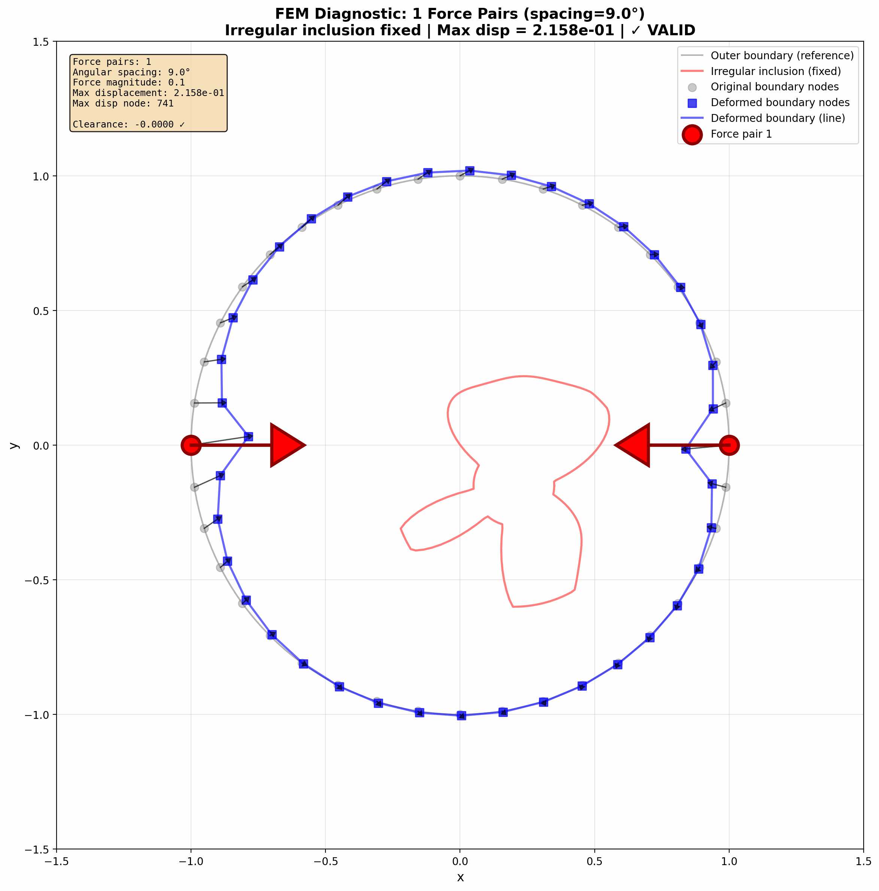

The Doctor's Hands
Close your eyes and imagine a doctor examining a patient. They press gently on the abdomen, feeling for something that shouldn't be there. This is palpation—one of the oldest diagnostic techniques in medicine, practiced for over 3,000 years.
What are they feeling for? Stiffness. A tumor is like a hidden pebble in a bowl of jelly—when you press on the surface, the stiff spot reveals itself through how the surrounding tissue deforms.
The Jello Analogy
Imagine a bowl of Jello with a marble hidden inside. When you poke the surface, the Jello near the marble doesn't jiggle the same way as the rest. An experienced chef (or doctor) can feel where the marble is just by how the surface responds to touch. That's exactly what our AI learns to do.
But here's the challenge: what if you could only feel the edges of the bowl, not poke anywhere you want? What if you had to figure out where the marble is using only boundary measurements?
That's the puzzle we're solving.
Learning from CT Scans
In 1971, Godfrey Hounsfield did something remarkable. He took X-ray images from many different angles around a patient and used mathematics to reconstruct what was inside. This became the CT scan, and it won him a Nobel Prize.
"What if we could do for touch what CT did for X-rays?"
We borrowed this insight. Instead of taking one measurement, we press on the tissue from many different angles, like a CT scanner rotating around a patient. Each press gives us a piece of the puzzle. Combine them all, and suddenly the hidden structure becomes visible.

The Student Who Checks Their Work
Here's where the AI magic comes in. We train a neural network—think of it as a very eager student—to guess what the stiffness map looks like inside the tissue.
But here's the clever part: we don't just accept the guess. We check it.
Step 1: The Student Guesses
The AI looks at how the surface deformed and guesses: "I think there's a stiff blob right here."
Step 2: Physics Checks the Homework
We use physics simulation to ask: "If that guess were true, how would the surface actually deform?"
Step 3: Compare & Learn
If the simulated deformation doesn't match reality, the AI learns from its mistake and tries again.
Step 4: Repeat Until Perfect
After thousands of iterations, the AI becomes remarkably good at guessing correctly.
The Math Test Analogy
Imagine a student learning to solve word problems. They don't just memorize answers—they guess a solution, plug it back into the original problem to check if it works, and adjust if it doesn't. Our AI does exactly this, using physics as its "answer key." It's learning physics by doing physics.
Why Should You Care?
Current medical imaging for tissue stiffness requires expensive equipment:
- MRI-based elastography: $1-3 million machines
- Ultrasound elastography: $50,000-200,000 systems
- PAT Scan vision: Potentially just sensors on a flexible band
Imagine a world where early tumor detection doesn't require a hospital visit. Where a wearable device could monitor tissue changes over time. Where healthcare reaches places that have never had access to advanced imaging.
💡 The Big Idea
We're teaching AI the ancient skill of palpation—the doctor's intuition encoded into algorithms. By combining the wisdom of physics with the pattern-recognition power of neural networks, we can make the invisible visible using nothing but touch.
Watch the AI Learn
The most beautiful part? You can actually watch the learning happen. Below, see the AI start with random noise and gradually converge on the correct answer over 2,000 training steps.

On the left is the "ground truth"—what we're trying to find. In the middle is the AI's current guess, getting better and better. On the right is the final cleaned-up boundary.
It's like watching a student learn to see.